Kidney Stone Treatment
Laser lithotripsy, URS, PCNL and RIRS pathways for stone pain, obstruction, and recurrence prevention.
Know More Dr. Sunandan Yadav
Urologist & Andrologist
Book Appointment
Dr. Sunandan Yadav
Urologist & Andrologist
Book Appointment
Consultations in Jaipur
MCh Urology | Consultant Urologist & Andrologist | Advanced minimally invasive care for urinary and men's health.
From kidney stone emergencies to long-term prostate and men's health concerns, each service is designed around diagnosis, treatment clarity, and faster recovery.
Laser lithotripsy, URS, PCNL and RIRS pathways for stone pain, obstruction, and recurrence prevention.
Know MoreEvaluation and treatment for enlarged prostate, urinary symptoms, TURP and laser-based options.
Know MoreConfidential consultation for erectile dysfunction, infertility concerns, and andrology-related care.
Know MoreDiagnosis-led care for repeated infections, leakage, urgency, bladder pain, and urinary discomfort.
Know MoreEvaluation and surgical guidance for kidney, bladder, prostate, and testicular cancer concerns.
Know MoreCare for urinary and genital concerns in children with family-sensitive explanations and follow-up.
Know More
Dr. Sunandan Yadav is a Consultant Urologist and Andrologist based in Jaipur, Rajasthan, with focused training in urology, minimally invasive surgery and patient-first clinical care.
MBBS, Rajasthan University of Health Sciences (SMS), Jaipur
MS General Surgery, SMS Jaipur
MCh Urology, Government Medical College Kota
Patients are guided through symptoms, scans, treatment choices, expected recovery, and follow-up prevention so care feels less uncertain.
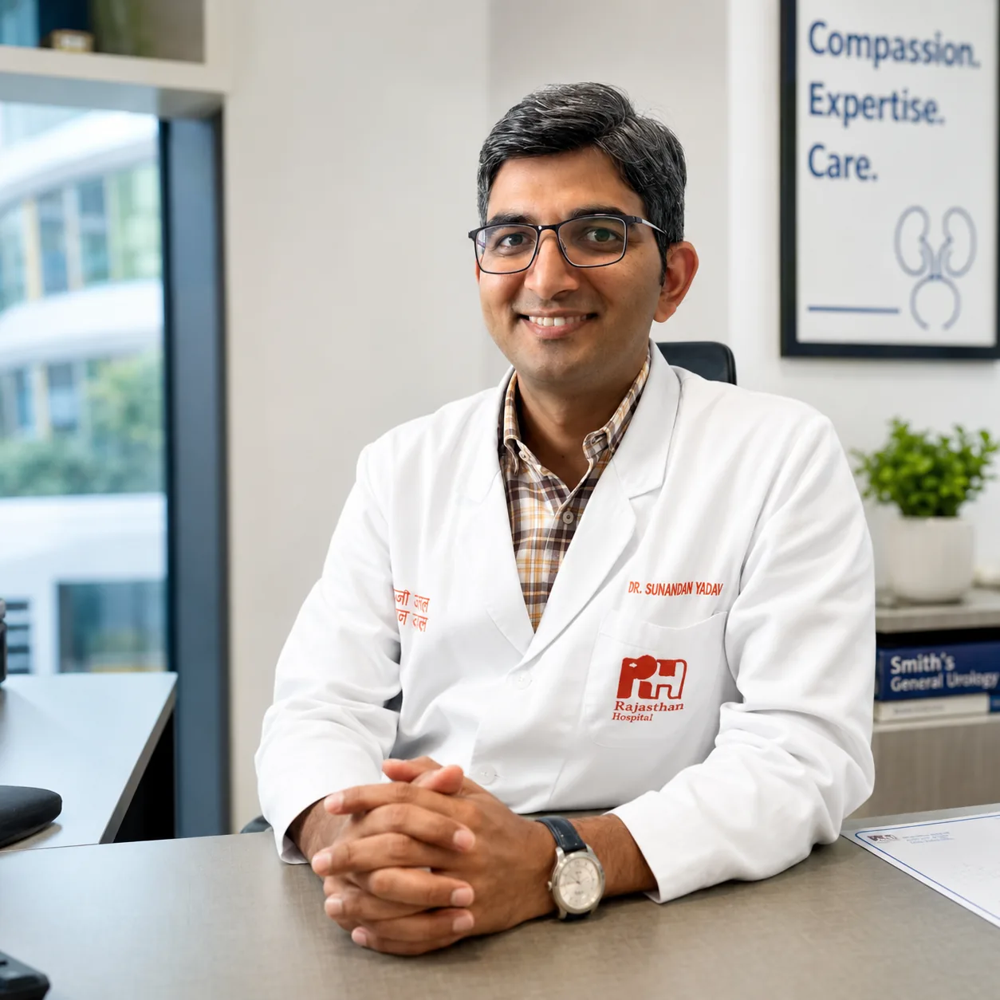
Evaluation covers frequency, weak stream, incomplete emptying, prostate size, medicines, and surgical pathways when needed.

Advanced surgical planning is presented in simple steps, from indication and hospital stay to expected recovery milestones.
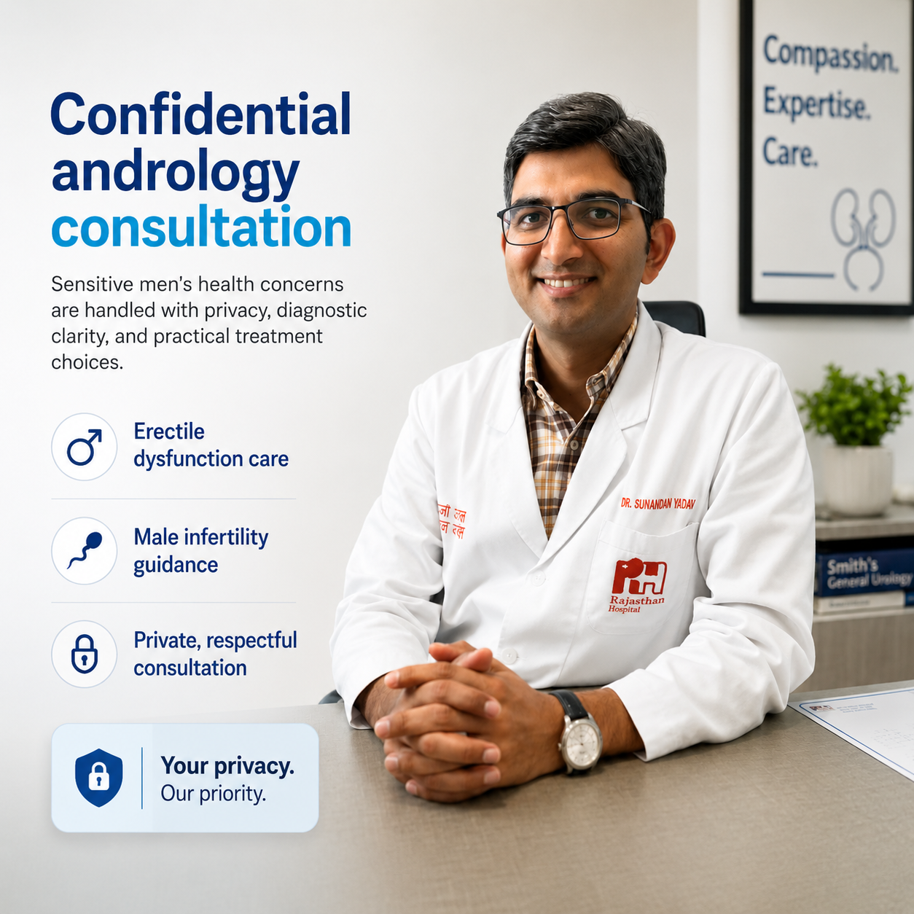
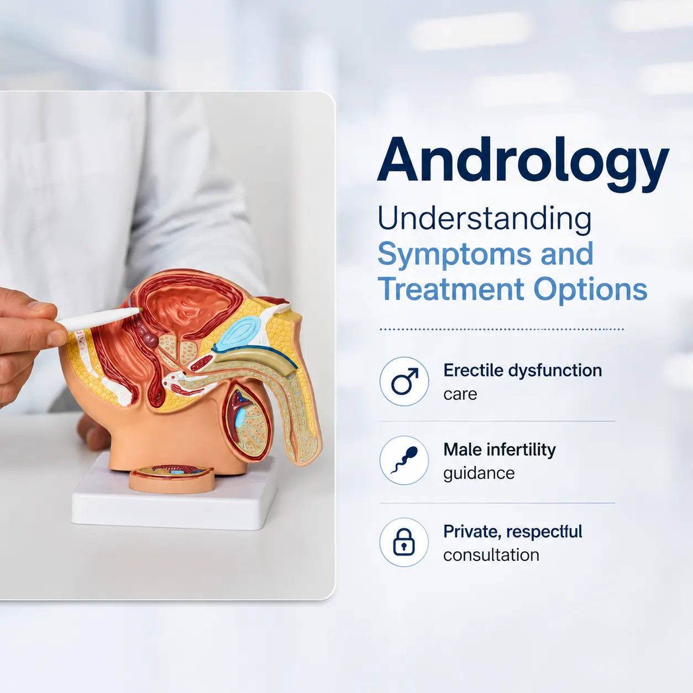
Sensitive men's health concerns are handled with privacy, diagnostic clarity, and practical treatment choices.
These visuals support the minimally invasive and laparoscopic care story without overwhelming visitors with technical detail.
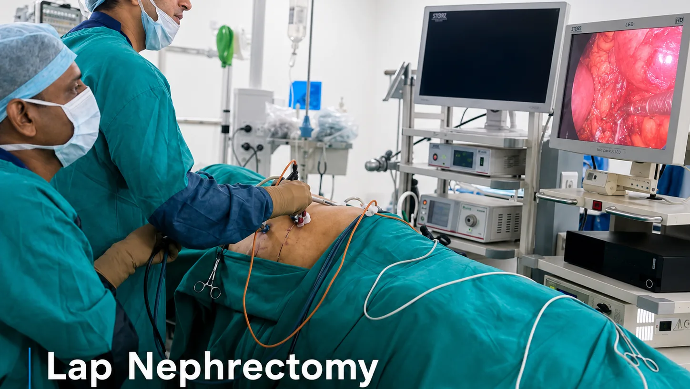

The website experience mirrors the clinic promise: clear next steps, modern treatment, and a doctor profile that feels both advanced and approachable.
Smaller incisions, faster recovery goals, and procedure choices suited to the diagnosis.
Laser, endourology, laparoscopy and robotic training highlighted with patient-friendly copy.
Jaipur and Rajasthan-based education, practice affiliations, and accessible OPD pathways.
Confidential andrology consultations for sensitive concerns without a cold clinical tone.
"Dr. Sunandan Yadav provided exceptional care for my 82-year-old father's urinary bladder ailment. His confident demeanor and surgical skill instilled trust from the start. He patiently addressed our questions, explained biopsy results and treatment options in detail, and maintained a compassionate approach throughout."
"My father was treated for urethral stricture and recovered well. Dr. Yadav understood everything clearly, treated us with care, and we were completely satisfied with the way he and the hospital team managed the treatment."
"Very humble and focused surgeon. He counselled me for kidney stone and helped me recover fast after surgery."
"Dr. Sunandan Yadav and staff are very responsive, helpful, and explain each query politely. Treatment was done very effectively."
"He helped my father during prostate cancer treatment and suggested the best treatment options. Very kind doctor."
"Very good experience with Dr. Sunandan Yadav. Nice behavior towards patients."
"Best urologist in Jaipur."
"The compassion with which you treat patients is more effective than medication. Thank you doctor."
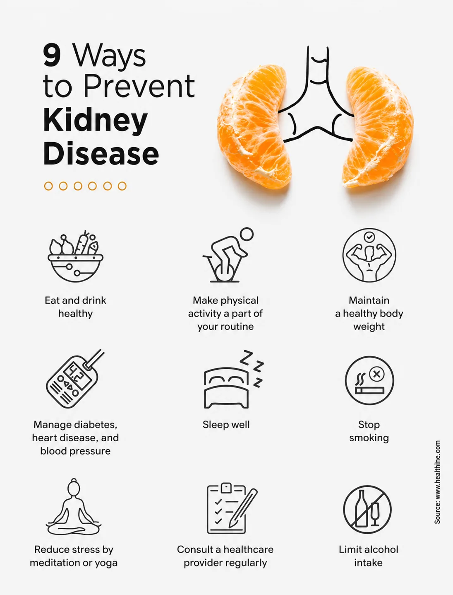
Simple daily habits that support kidney function and long-term urinary wellness.
Oxalate-rich foods and diet patterns that may need moderation for stone-prone patients.
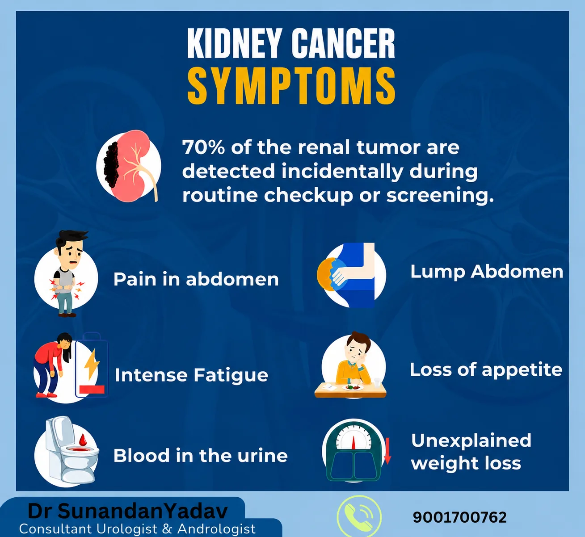
Awareness signs that should prompt timely specialist evaluation and imaging.
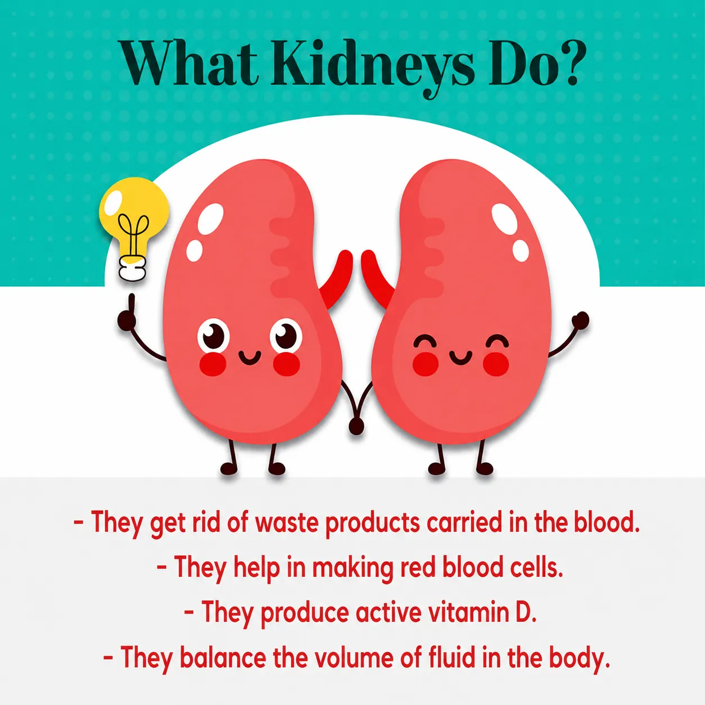
Kidneys filter waste, help make red blood cells, produce active Vitamin D, and balance body fluids.
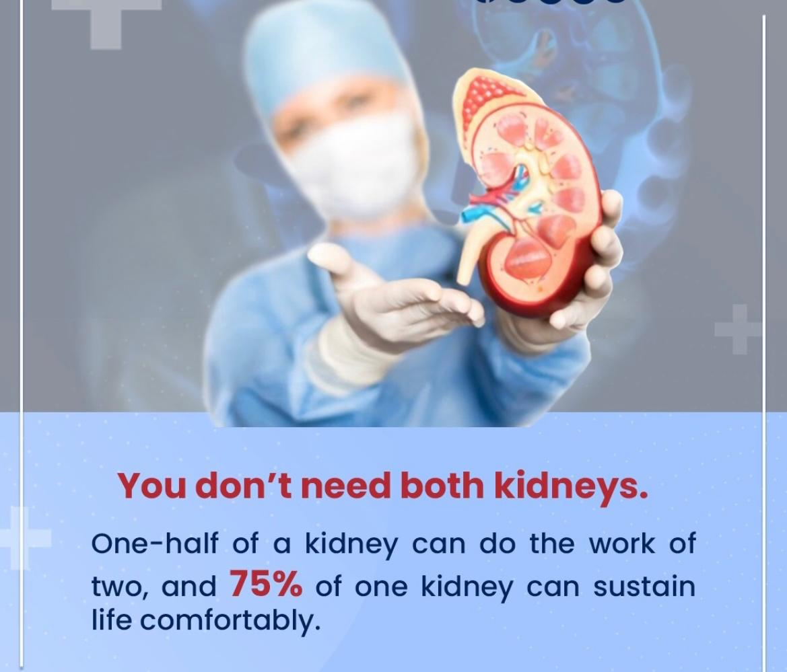
75% of one kidney can sustain life comfortably — a key fact for kidney donors and surgery patients.

Throughout the day, kidneys produce 1000–2000 ml of urine, averaging 1.5 litres per day.

UTIs are caused by bacteria entering the urinary tract — not limited to sexual activity alone.
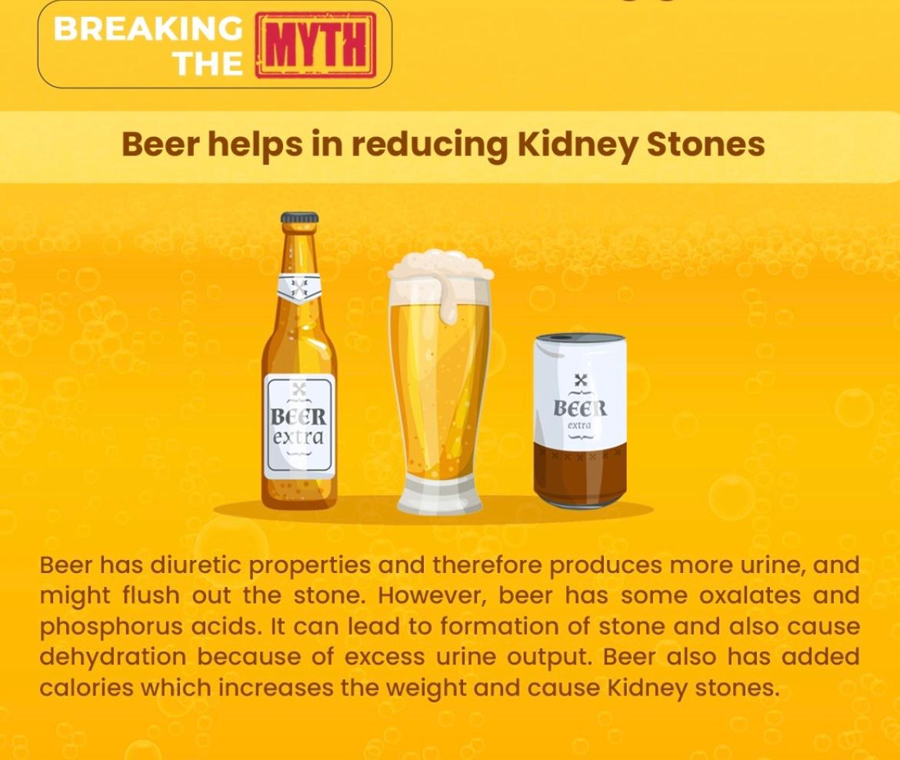
Beer has oxalates and phosphorus that can actually cause stones and lead to dehydration.

Hydrotherapy increases intra-renal pressure and is not ideal for stones. Plain water is the best medicine.
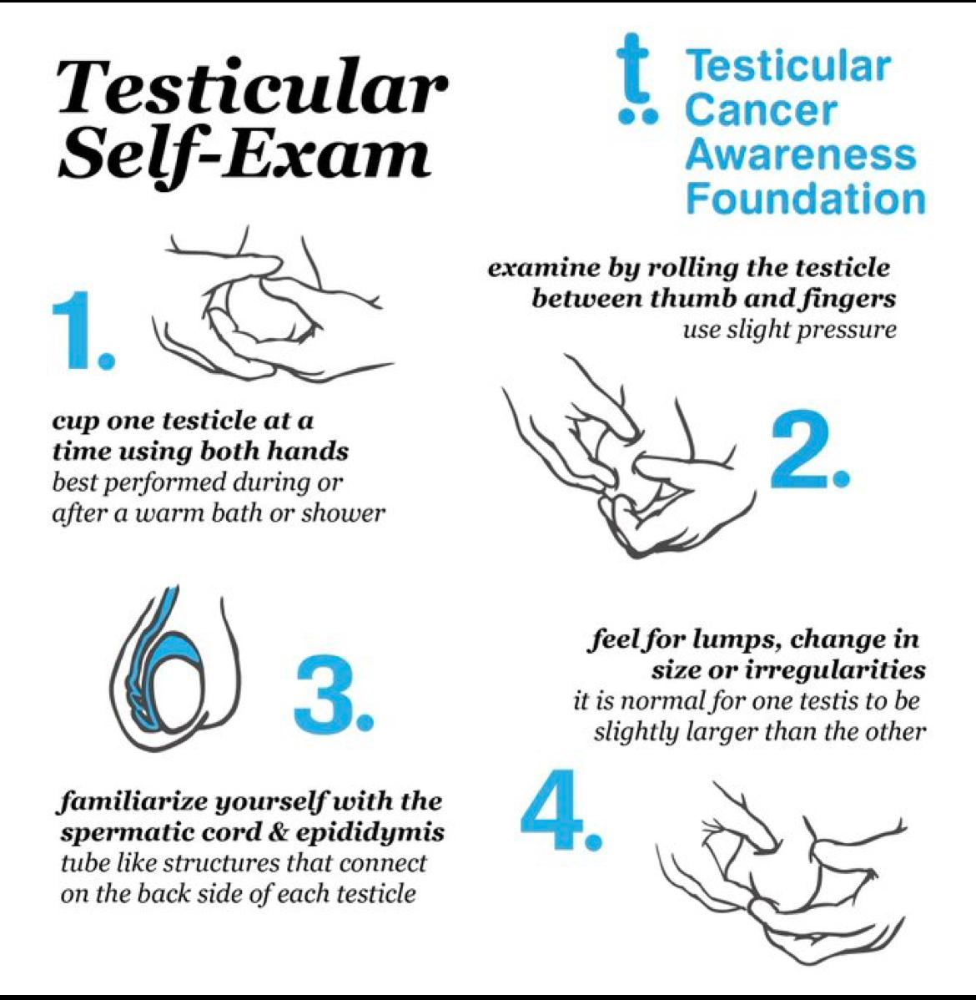
Early detection of testicular cancer starts at home. Learn the correct self-examination technique.
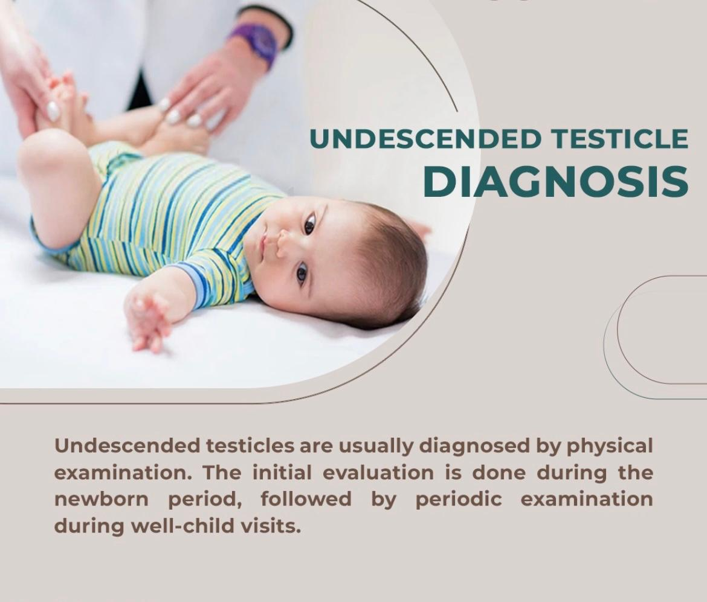
Diagnosis is done during the newborn period through physical examination and periodic well-child visits.

Hormone injections or laparoscopic surgery — early treatment ensures the testicle develops normally.

Myth busted: Urinary incontinence can occur at any age and is very much treatable with specialist care.
Share your symptoms and preferred location. The clinic team can confirm availability, OPD timing, and the right consultation slot.
App Developer & Designer ⚡
For app support, new development, or feature requests, feel free to connect with me.